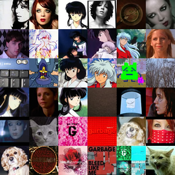

"I never once in my sweet, short life meant anybody harm..."
It's sad to say that this is my last Blog, but it really is. I have been doing this for so long, it's almost scary to think I'm not going to have a place to rant and be original. Blogging was the one thing that, despite my happiness or depression, I could always go and feel like myself again. For some reason, during my tenure here at UGA, having my own little log of events was somewhat of a comfort for me. I'm grateful that I found the energy and creativity to fuel a place like this.
But now I'm leaving it behind. I'm not getting a LiveJournal or anything like that, I'm just going away quietly. I don't think I see much reason to Blog any longer. I feel like the most exciting thing I can do now is to try my life off the radar, away from the assuming silence of this place. I can't tell you how much contempt I feel when I think of how many people I know (who supposidly love me and care about me) come here to see about me instead of speaking to me. I want to make it harder for them to keep tabs on me. I'm sick of being on the slab. I want to be free.
I feel, once I shead this, I truly can be. Something that has preoccupied my mind for so long—ever since I realized my Junior year that I had more time behind me than I had in front of me—is that one day I will have to leave. I knew then that Athens was not mine forever. It belonged to the underclassman and not to the graduates (unless you're lame enough to go to Grad school here or get a job). I knew that when my time came, I would have to find a new place to go so I could blaze a new trail.
That's what I wanted to find this summer, but that didn't happen. I'm going to Ohio so that I can keep looking, and though I once saw going here to be a solemn defeat, I don't feel that's completely true. I am leaving. I'm really getting out of this place and going far away to someplace that I have really never known before. Different people. Different circumstances. A whole new place to be me where I don't have to worry from what dark corner the past may come after me. For this, I am very excited.
I think so many people find safety in the places they've been before, but I don't want to meander. I want to go out and say at the end of the day that I took the big chances. Maybe that's why it's been harder for me. I know that's why I need more time, when I do find where I'm going, it will be very good. It will be worth it.
Oh, before my goodbyes, I must fulfill a Blogging icon tradition. I never had so many icons before, they truly were the best. Now they are all retired:

So, as I find myself reaching to bottom of the page, I just want to say thank you. Thanks for coming here, leaving comments, and reading my rants. Even if you hate me, there must be something here that keeps you coming back. Thanks for showing an interest.
I want to tell my friends that I love them and that I will miss them very much. I mean, you know I love you, I hate to make Friends Pages, and look how many I have! And those tribute Blogs are also a pain to write too. Reminiscence is exhausting, but I wouldn't have done it unless you were worth it.
I want to say that I truly will miss Athens. I know I have to leave, but I don't want to. I have had the time of my life here. I have fallen in love with your convoluted streets, classic atmosphere, and beautiful people. When I look back, the most memorable times I had were when I was riding around town on my bike. I will miss the open air, the sunshine, and the many bike lanes. I really will.
And to everyone, I want to say that I will be back. I'm not sure when or for how long, but I promise I will be back. This place is too familiar and treasured for me to leave behind forever.
So that's it. Don't forget me, and if you want to find me, I'm not that hard to find.
Thanks again, and good-bye.
| Current Mood | Free | ||
| Current Music | garbage - Happy Home |

 After a muted sigh in my upstairs hallway, I say to myself, "This is it." I take one last jog down the stairs. Everything's packed. I've left nothing behind (except for a few lucky dust bunnies). Tonight, I leave my precious home behind.
After a muted sigh in my upstairs hallway, I say to myself, "This is it." I take one last jog down the stairs. Everything's packed. I've left nothing behind (except for a few lucky dust bunnies). Tonight, I leave my precious home behind.